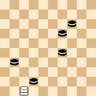

PDN 3.1 Proposals¶
This section describes proposals for the next version of the PDN standard.
Alternative move disambiguation¶
The current way of move disambiguation (see section PDN Grammars) was chosen for backward compatibility.
The following alternative is proposed. An ambiguous move is written as usual, followed by the sequence of
captured squares between angular brackets < and >. For example, in the following position

the two possible captures are written as 47x36 <42, 29, 14, 31> and 47x36 <42, 29, 19, 31>. The
motivation for this is that it is less complicated to implement, and easy to understand for humans.